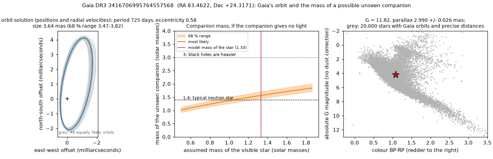
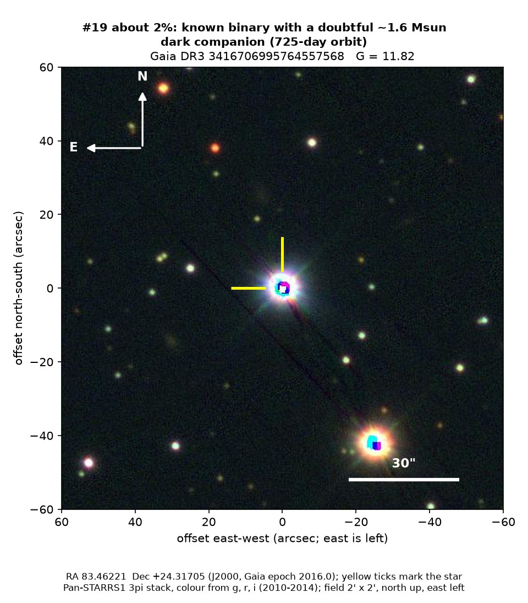

Professor of Mathematics
Paata Ivanisvili
Department of Mathematics, University of California, Irvine

Candidate 19: a known binary with a doubtful heavy companion
Why this estimate. The star is already known to be a binary, and Gaia’s own measurements of its speed along the line of sight swing by only about a third of what a companion this heavy would cause, so the companion’s mass is probably overestimated.
How to read the pictures. The orbit figure has three panels. On the left is the small ellipse that Gaia’s orbit traces on the sky, measured in thousandths of an arcsecond, with grey orbits that fit the data about equally well. In the middle is the mass the unseen companion would need for each possible mass of the visible star; the shaded band is the likely range, the red line marks the star’s estimated mass, and the dotted and dashed lines mark 3 and 1.4 solar masses, roughly where black holes begin and where a typical neutron star lies. On the right, the star (red) sits among other stars in Gaia’s diagram of colour against brightness. The finder chart shows a patch of sky two arcminutes across, about a fifteenth of the Moon’s width, with north up and east to the left; the star sits between the two yellow ticks, and the white bar is 30 arcseconds long.

What Gaia found. This is a yellow-white star of type F, about 6,700 K, some 330 parsecs away in Taurus, already catalogued as a spectroscopic binary, a pair of stars betrayed by the shifting lines in their spectrum. Gaia combined the star’s motion on the sky with its speeds along the line of sight into a 725-day orbit with eccentricity 0.58. If the star has about 1.3 solar masses, the companion has about 1.6 solar masses (1.4 to 1.7) and gives off no visible light.
Why the estimate is low. Over 13 visits Gaia measured the star’s speed along the line of sight varying by only 14.7 kilometres per second, where this orbit with so heavy a companion predicts about 43. Sparse sampling of an elongated orbit can hide part of the swing, but not likely most of it. The star is also seen through about a magnitude of dust, which makes its own mass uncertain, and the binary itself is already recorded.
The binary is known, but no record of a dark companion this heavy could be found. The star is too bright for Pan-STARRS1 and ZTF, which saturate on it, so there is no light curve.
- Star
- Gaia DR3 3416706995764557568 (TYC 1848-703-1), an F-type star in a known binary
- Location
- RA 83.46221°, Dec +24.31705° (J2000), in Taurus
- Distance
- about 330 parsecs (1,100 light-years)
- Brightness
- Gaia G = 11.8, too faint for the eye but easy in a small telescope
- Probability
- This candidate is unconfirmed. The percentage under the title is an estimate of the chance that it is a real, previously unrecorded case of the kind described. The estimate has not been checked by outside experts. See the introduction to all fifty-eight candidates.
- Caveat
- The star’s measured speeds swing far less than the orbit predicts, its mass is uncertain because of dust, and the binary is already known.
